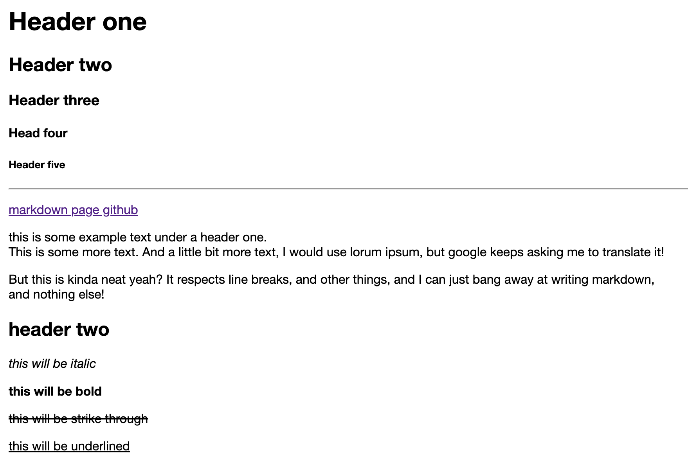
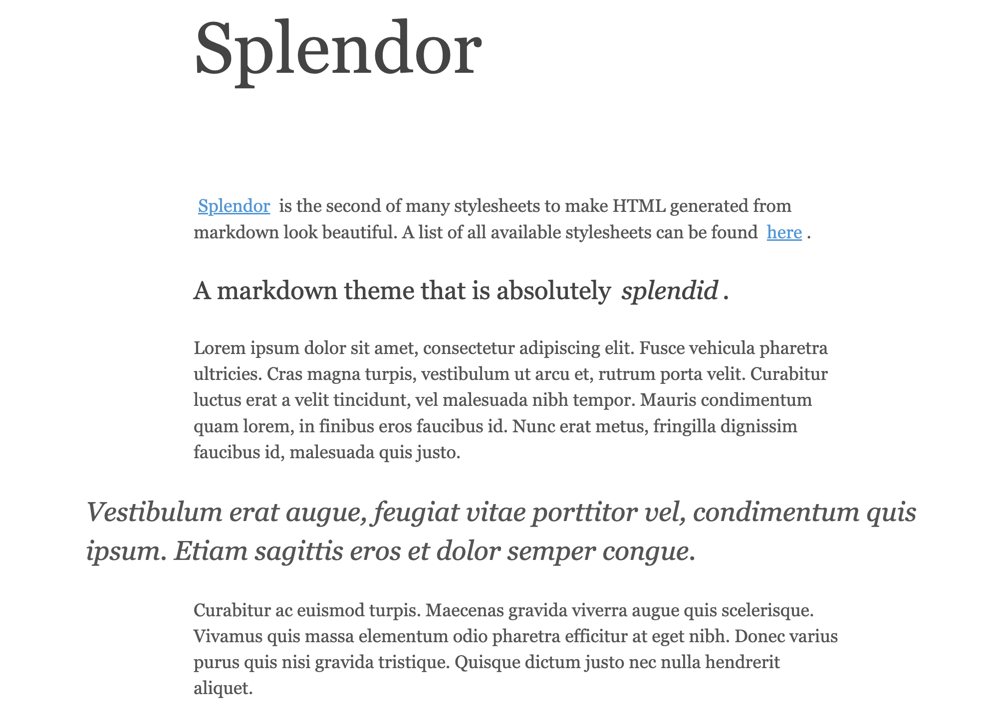
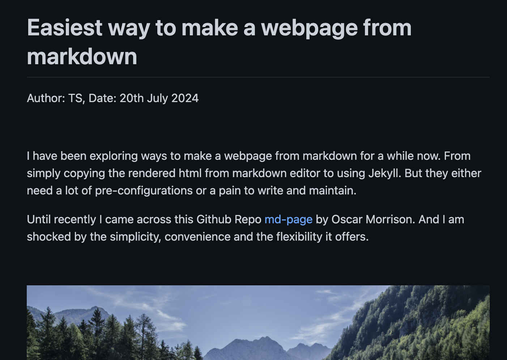

<link href="css/splendor.css" rel="stylesheet">
<script src="https://rawcdn.githack.com/oscarmorrison/md-page/232e97938de9f4d79f4110f6cfd637e186b63317/md-page.js"></script>
<script type="text/javascript">
    window.MathJax = {
      tex: {
        inlineMath: [['\\(','\\)']],
        displayMath: [['$$','$$']],
        processEscapes: true
      }
    };
  </script>
  <script type="text/javascript" id="MathJax-script" async
    src="https://cdn.jsdelivr.net/npm/mathjax@3/es5/tex-mml-chtml.js">
  </script>  
</script>
<noscript>

# Easiest way to make a webpage from markdown

Author: TS, Date: 20th July 2024

<br>

I have been exploring ways to build a webpage from markdown for a while now. From copying the rendered html to Jekyll. But they are either too complicated or a pain to write and maintain.

Until recently, I came across this Github repo called [md-page](https://github.com/oscarmorrison/md-page) by Oscar Morrison. And I am shocked by the simplicity, convenience and the flexibility it offers.

<br>

<div class="wide-image">
    
</div>

<br>

For those who want to start blogging or share a webpage without much hassle and digging into the world of html/css, here is a 5-min guide of how you can build a website from your markdown code.

As you may notice, this page is also made using md-page, with a little bit of customized css. You can find the source code [here](https://github.com/st3nv/st3nv.github.io/blob/master/blogs/Jul-20-2024_easiest-way-md.html) for your reference.


### Step 1: Write using markdown

First, you need to write your content in markdown. Simple.

### Step 2: Create the html file

In a code editor, create a new html file named `md-page.html` and add the following code in the very beginning.

<iframe src="https://www.thiscodeworks.com/embed/669b557a02128000147b8cd4" style="width: 100%; height: 112px;" frameborder="0"></iframe>

Then copy paste the markdown content under the line you just added.

That's it! It's that simple. Save and open the the html file in a browser and you can see your markdown content rendered as a webpage. Here is a [demo](https://oscarmorrison.com/md-page/) by the original author and see below for a screenshot of it.

<div class="narrow-image">
    
</div>
<figcaption>Screenshot of the md-page demo</figcaption>


### Step 3: Add css

Although you are writing in markdown, you can still customize the style of the webpage using css. For those who have little knowledge of it, I would recommend to start with some examples online.

- [Splendor](https://github.com/st3nv/st3nv.github.io/blob/master/blogs/css/splendor.css) by John Otander, the theme I modified and used for this page.

<div class="narrow-image">
    
</div>
<figcaption>Screenshot of the Splendor theme</figcaption>

John also made many other beautiful themes that you can find [here](https://markdowncss.github.io/).

- [Github markdown dark](https://github.com/st3nv/st3nv.github.io/blob/master/blogs/css/github-markdown-dark.css) by sindresorhus, the theme I applied in many other projects. It mimics the markdown style you see on Github. It also comes with a light version.

<div class="narrow-image">
    
</div>
<figcaption>Screenshot of the Github markdown dark theme</figcaption>

The good thing of css is that it is very easy to understand and modify. You can build your own style by changing the color, font, size, margin, padding, etc.


### Step 4: Publish

Once you are happy with the content and style, you can publish it to your own website. For casual sharing, I highly recommend [Github Pages](https://docs.github.com/en/pages/quickstart). It is free and have a lot of resources online to help you set up.


### Conclusion and limitations

Of course, md-page is not perfect.

1. It does not support all the markdown syntax. For example, it does not support footnote, like this[^1]. But it is good enough for most of the cases.
2. It does not support the rendering of latex formulas like <span>$(2x+1)$</span>. But you can still use images of latex equations or use html to render them.

When \(a \ne 0\), there are two solutions to \(ax^2 + bx + c = 0\) and they are

<div class="latex">
$$x = \frac{-b \pm \sqrt{b^2-4ac}}{2a}.$$
</div>

</noscript>
